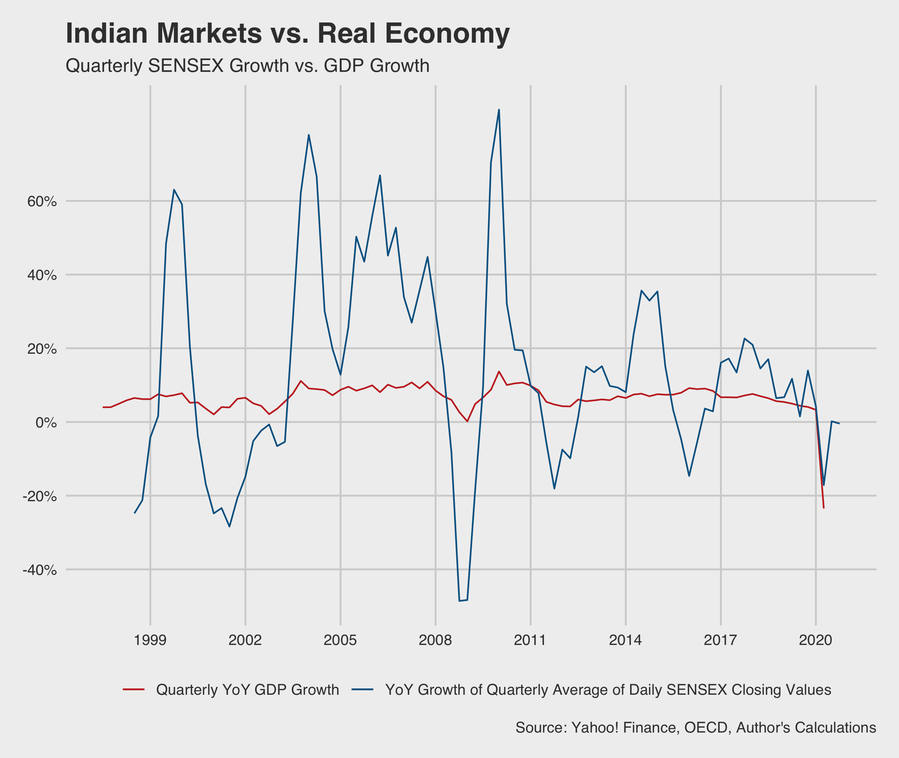

Yesterday (on the 15th of October), as many predicted, the market crashed with the SENSEX falling by over 1,000 points, all sectoral indices were in the red, and equity investors lost Rs 3.3 lakh crore (INR 3.3 trillion). With rising unemployment, destroyed or subdued demand, poor fiscal stimulus announcement after announcement, loan restructuring, and the previous aggressive bullishness in the market, both a general decline and this particular crash seem warranted. However, today, on the 16th, the SENSEX is up by around 250 points, seemingly recovering ~25% of the wealth lost yesterday. This volatile bounce back triggered me to write on the growing, increasingly erratic gap between our stock markets and real economy. I wanted to attempt to describe the difference between Dalal Street and Delhi’s North Block, to myself and here.
To put it differently, this is the kind of data journalism I'd like to see a lot, that I don't really see; the main intention of this post is to share this graph (the two lines have a correlation of 0.506 and the two rates have a t-value of 5.45 with a p-value < 0.001):

I do not think we understand this gap or its wideness perfectly yet, both at home and globally. But a few perspectives seem sensible.
First, I think there is a market perception of a definite recovery. For one, there is the idea that given that everything has already crashed, things can only move upwards. Further, it seems to me, there is an expectation (almost an implicit reliance) on the idea that fiscal stimulus and government intervention will and must happen (it has happened globally, to some extent). This seems to be keeping market appetites up as, if things will only go up hereon, long positions seem more warranted. There is some value to this line of throught: Deutsche Bank estimates total fiscal and monetary stimulus at more than US$ 10 trillion in the G7 countries alone which will make it five times more than the stimulus the G7 rolled out after the 2008 Global Financial Crisis. While central banks have tried to ensure that the market doesn’t crash to a severe extent, it seems like their actions carry disproportionate weight in market enthusiasm. So much so that the RBI had to intervene to rationalize yields on state bonds recently. As the Economist writes this month, “This rosy view from Wall Street should make you uneasy.”
But second, as many experts point out, it seems like the markets are growing increasingly detached from real world outcomes, betting purely on future profits. Business fundamentals seem to remain poor and lost demand is yet to revive, but the market doesn’t seem to care. As JP Morgan notes, “The S&P 500 is only 15% below its all-time high, reached on February 19, 2020, and it trades with a forward price-to-earnings multiple that is the highest since the dot-com bubble in 2000.”
The Economist does a good job of pointing out why this is all dangerous, pointing to the devastation a second crash could now cause if/when nations enter second waves of infections and if cost-cutting doesn’t save the GDP after all, incentivizing fraud as hiding your losses is more important when the market is recovering aggressively (whose eventual revelation would also shock the economy), and the anti-corporate political backlash that could ensue if big corporations continue to grow while smaller ones struggle. All of this mean that the “things can only get better” narrative is dangerous and might itself cause crashes in the coming days.
 Git:
Git: